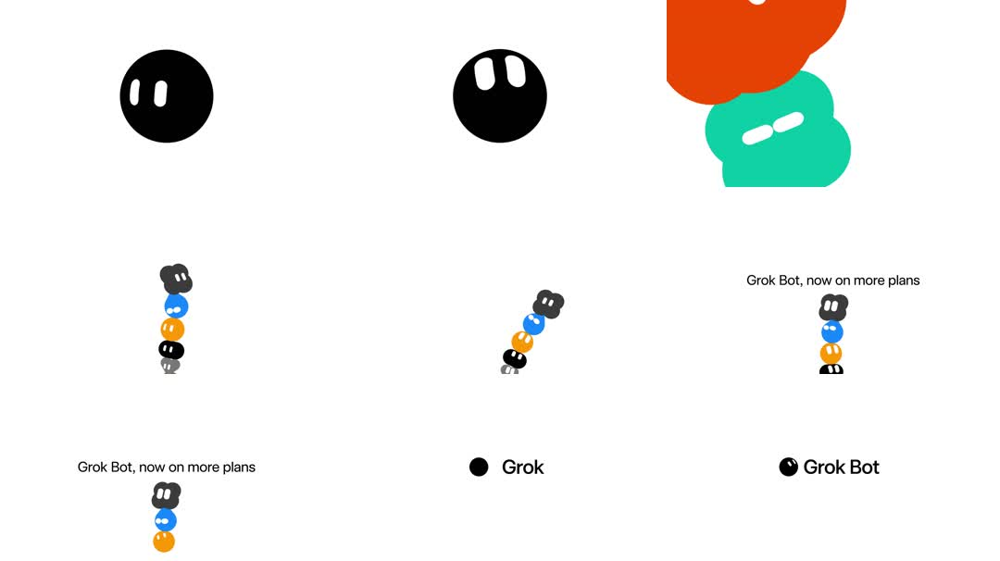

Grok Bot brand motion: a friendly blob mascot system - a black circular face with two white pill eyes that blink and slide; the circle morphs into a rounded blob/squircle; mini blob variants (black, blue, orange, white) stack into a wobbling totem; headline 'Grok Bot, now on more plans'; big orange and teal blob shapes round out the identity.
Media
Frame-by-frame

0-25%
Black circle face: eyes blink (pills squash vertically) and drift; circle subtly squishes (scale 1 -> 1.04/0.96).
25-50%
Shape morph: circle eases into an organic blob (border-radius keyframes) in orange and teal variants; eyes stay anchored and look around.
50-75%
Totem: 4 mini blobs (black, blue, orange, white-grey) stack vertically, wobbling like a bobble stack (each rotates +-8deg offset); the stack tilts as a whole.
75-100%
Lockups: 'Grok Bot, now on more plans' beside the totem; 'Grok' dot + wordmark; 'Grok Bot' blob + wordmark.
Build prompt
Rebuild this interaction 1:1: Grok Bot brand motion - a friendly blob mascot system: a black circular face with two white pill eyes that blink and slide; the circle morphs into a rounded blob/squircle; mini blob variants (black, blue, orange, white) stack into a wobbling totem; lockups with "Grok Bot, now on more plans".
## Integration
Integration: stack-agnostic spec - springs given as stiffness/damping, timed motions as duration + curve, canvas/shader notes are perf guidance only; map every value to your framework and animation library of choice.
## Scene
Light canvas. Act 1: black circle face, two white pill eyes. Act 2: the circle morphs into organic blobs (orange and teal variants), eyes anchored. Act 3: 4 mini blobs (black, blue, orange, white-grey) stacked into a totem. Act 4: lockups - "Grok Bot, now on more plans" beside the totem; "Grok" dot + wordmark; blob + wordmark.
## Motion spec
Pattern: brand loop in four acts.
- Eyes: blink every ~3s - pills squash vertically (scaleY 1 -> 0.1 -> 1, 120ms); eyes drift/slide (look-around) on slow random paths.
- Face: subtle squish (scale 1 -> 1.04/0.96) as it idles.
- Morph: circle eases into a blob over 600ms with a spring; eyes stay anchored and keep looking around through the morph.
- Totem: each mini blob rotates +-8deg offset from its neighbor, wobbling on a 2s sine; the whole stack tilts gently.
## Calibration
- Blink 120ms, every ~3s with slight irregularity - metronome blinks read as robotic.
- The morph's border-radius keyframes must keep the shape organic (asymmetric radii), not a rounded square.
- Totem wobble +-8deg per blob with phase offsets - a bobble stack, not a rigid column.
## Reduced motion
Static face with eyes open; totem stacked straight; lockups unchanged.
## Don't miss
- Eyes keep animating through every shape change - they are the character's continuity.
- Morph and wobble use different rhythms (600ms spring vs 2s sine); do not sync them.
- Wordmark lockups are typeset, not image placeholders.
Mechanics
trigger
autoplay brand loop
elements
face circle, pill eyes, blob morph shapes, mini-blob totem